阅读导航(图文按讲述顺序穿插)
速览:一句话、关键数字与全文结论 背景:全注意力的重复成本与稀疏谱系 方法:窗口如何切、覆盖为何成立、成本怎么算 执行:前向/反向/解码与张量并行 实验一:覆盖率消融与关联召回 实验二:算子延迟与显存(含路由/索引开销) 实验三:Scaling law 与 14B/32B 模型评测 点评:设计亮点、边界与待补测清单 术语速查(阅读中随时回看)
01 · Overview
速览
这篇论文只做了一件事:把全注意力 里「每个 head 都要重复看到完整因果历史 」这条隐含约定,换成「一组 KV head 合起来看到完整因果历史 」。代价是单个 head 对远处变稀疏,收益是把长程 query-key 连接里的重复项消掉;而它给出的答案是——只要这个「集体覆盖」是完整的,检索与语言建模质量几乎不掉。
结构上很轻:所有 KV head 共享近邻窗(near window )与前缀 sink 窗(sink window );剩下那段长程距离被均分成 $H_k$ 段互补区间,每个 KV head 恰好认领一段。于是任何一个 key 位置,在整层里总是被某个 head 直接看到,但从不需要被所有 head 都看到——论文把这条性质称为 collective coverage (集体覆盖),并用下面这张总览图一次讲清:
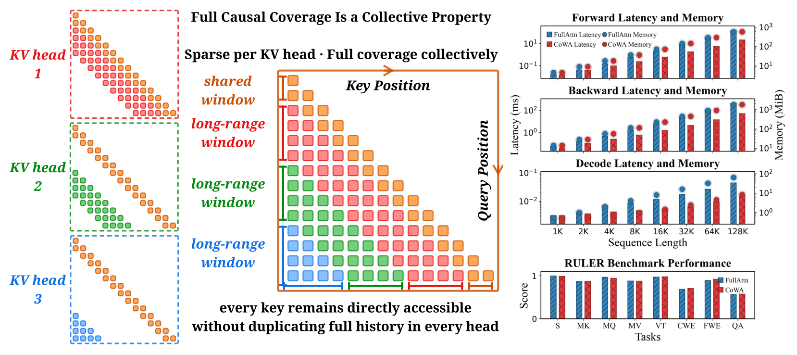
Figure 1: CoWindow Attention Overview. Left: All KV heads share the near window and receive complementary long-range windows whose union covers the full causal attention region, preserving direct access to every preceding key position without duplicating the full history in every head. The shared sink window is omitted for visual clarity. Right: As sequence length grows, CoWA reduces forward and backward latency during training and decoding latency during inference, while matching FullAttn's peak operator memory during training and reducing it during decoding. Separate model-level evaluations show comparable performance on the RULER benchmark.
左:每个 KV head 的可见键集合。橙色近邻带是所有 head 共享的;绿、蓝等长程带各自只属于一个 head,合起来铺满整条历史。中:把因果三角按「到当前 query 的距离」切分——右上角小块是共享近邻窗(以及被省略的 sink 窗),其余按距离均分给 8 个 KV head,每个 head 只在一条斜向带里稠密,在别处全空。右:四条汇总曲线依次为前向延迟+显存、反向延迟+显存、解码延迟+显存,以及 RULER 分项得分;红色(CoWA)在长序列上同时压低延迟与显存,并与蓝色(FullAttn)在 RULER 上基本重合。
报告 p.2
💡 点击任意图片可查看原始高清大图,再次点击或按 Esc 关闭。
读数约定: 本页全部数字以论文原文为准;凡由本页依据论文配置整理、归纳或换算的内容,均以「整理 」「推算 」显式标注,便于与论文口径区分。记号沿用论文:$N_q, N_k$ 为 query/key 序列长度,$H_q$ 为 QO(query/output)head 数,$H_k$ 为 KV head 数,$H_q/H_k$ 为每个 KV head 服务的 QO head 组大小,$d_{qk}, d_v$ 为 head 维度,$w_{\text{sink}}$ 与 $w_{\text{near}}$ 为共享的 sink 窗宽与近邻窗宽,$TP$ 为张量并行度。本页另用 $\bar{s}$ 表示论文定义的「平均每个 query、每个 QO head 实际选中的 key 数」。
8K 关联召回 · 100% 集体覆盖 vs 满注意力
89.73% FullAttn 89.97%,同窗宽下只差 0.24 个百分点(Table 1 / Figure 2)
同窗宽、只改覆盖率的对照(8K)
21.32 → 89.73 重复窗 12.5% 覆盖 → 互补窗 100% 覆盖
128K 算子延迟(8×H100,TP=8)
前向 7.4× · 反向 8.6× 相对 FullAttn;解码 3.0×
解码算子峰值显存
8.4 MiB(低 7.6×) FullAttn 64.0 MiB;训练前向/反向峰值与之持平
14B 训练总 FLOPs 降幅
3.1% / 28.5% 4K 预训练 / 32K 长上下文训练;困惑度与 FullAttn 基本持平
14B / 32B 模型评测
可比而非更好 知识 72.70/76.07,推理 64.87/75.53,RULER 与 FullAttn 相差 ≤0.3 分
先记住三个判断: 它不改变注意力的二次方性质。 固定 $H_k$ 时全序列注意力仍是 $O(N^2)$,省下的是「跨 head 的重复连接」——这也是预训练阶段 FLOPs 只降 3.1%、长上下文阶段才降到 28.5% 的原因;序列越长、共享窗占比越小,收益越大。它的核心卖点是「没有选择开销」。 可见块由位置(与全局 KV-head 索引)直接算出,不需要 MoBA 的块池化与 TopK、也不需要 DSA 的 lightning indexer;辅助状态规模 $O(H_k)$ 与序列长度无关。长序列上正是这部分把对手甩开。它有一个硬前提:$H_k$ 要够大。 互补区间的数量就是 KV head 数。论文明确写了 $H_k=1$ 时集体覆盖退化为稠密因果注意力——这意味着该设计与「用极少 KV head 换显存」的 MLA/MQA 路线存在张力。
02 · Background
背景:全注意力的重复成本,与稀疏注意力的三条路线
2.1 被优化掉的是 IO,不是「重复」
长上下文需求(长文档理解、多轮推理、仓库级代码生成)把序列从几千推到几十万 token,注意力成为主要开销。FlashAttention 一类工作(Dao et al., 2022)用分块、融合与 online softmax 把 IO 效率做上去了,但它不改变注意力模式 :每个 head 依然要对完整因果前缀做一次 QK 与 PV。也就是说,同一个远距离 key 会在一层内被 $H_k$(乃至 $H_q$)个 head 各自重复读一遍、各自算一遍连接——这部分是纯粹的结构性冗余,和 kernel 写得好不好无关。
2.2 已有的三条稀疏路线,各自的代价
论文把对手分成三类,并逐个点出其代价,这构成了后文算子基准的伏笔:
固定窗 / 局部窗 (Longformer, Beltagy et al., 2020;SWA):规则、快,但每个 head horizon 相同,且直接失去 对更远 token 的直接访问;结构化块 / 全局 token (Child et al., 2019;Longformer):只保留预先规定的长程路径,灵活性有限;动态选择 (Seer、NSA、MoBA、DSA、InfLLMv2 等):按内容分数或路由选 token/块。更灵活,但引入一个额外的选择问题 ,并且常常破坏那种让稀疏注意力便宜下来的规整窗口结构——于是多出路由器/索引器自己的 FLOPs 与辅助状态。
论文接着指出一个常被忽略的事实:两个方法即使选中 token 预算相同 ,端到端成本也可能差很多——因为选择本身要花钱。这个论点后来被 Table 3 的渐近账本与 Figure 3 的实测曲线同时兑现。
2.3 为什么「分给 head」是合理的:head 本来就有分工
论文援引的出发点是注意力 head 的异质性:不同 head 会自发形成不同角色,长程与局部行为并存(Barbero et al., 2025 等一串工作)。既然 head 之间本来就不是同质的,那么「让每个 head 都看全部历史」就不是必须的——只要保证对每个 query,每个历史位置至少被一个 head 看到 。
最接近的上游工作是 SPAttention(ref [66]):它按因果距离把区间分给 MHA 的各个 head,同时保持聚合意义上的因果连通性。论文对两者关系的表述很克制也很关键:本文把它提炼成一条可系统评估的设计原则 (不要求每个 head 都覆盖每个位置),并给出 GQA 下的实例化;$H_k$ 个 KV head 的互补窗是这条原则的一个简单实现。论文还用一个脚注把界线划清:SPAttention 已发表的「互斥分段」与其开源实现 MEHC 的 shared-local 行为并不一致,后者不提供本文研究的长上下文 GQA、解码与张量并行执行。
把这些放在一起,论文要回答的问题就成形了:把对因果历史的访问分配到 KV head 上,能否在保住模型质量与长程检索的同时,真正降低训练与推理成本? 注意它把「实现层面可行」也算进问题里——这解释了为什么全文有相当篇幅在讲张量并行、分块遍历与解码。
03 · Method
方法:窗口怎么切、覆盖为什么成立、成本怎么算
3.1 一个贯穿训练与推理的距离定义
先解决一个工程上最容易出错的地方:训练时是完整序列(因果掩码),prefill 时 $N_q$ 与 $N_k$ 可能不等,解码时 $N_q=1$ 而 $N_k$ 是已缓存长度。论文用「右下对齐」的因果距离把这三种情形统一到同一个式子里:
$$\delta(i_q, i_k) := i_q + (N_k - N_q) - i_k \tag{1}$$
当 $N_q = N_k$ 时它退化为熟悉的 $i_q - i_k$;key 对 query 因果可用,恰好等价于 $\delta(i_q,i_k) \ge 0$。这样一来,后文所有窗口(近邻、sink、长程)都可以只用 $\delta$ 描述,训练、prefill、解码三处不必各写一套规则——这一点是 CoWA 相对动态稀疏方法的一个结构性优势,因为动态方法在解码步往往要特殊处理「新 token 尚未进入索引」之类的边界。
第二个接口是 GQA ($H_q$ 是 $H_k$ 的整数倍):QO head $h$ 使用 KV head $h_k = \lfloor h H_k / H_q \rfloor$ 的 K/V 张量与窗口分配。这 $H_q/H_k$ 个 QO head 构成一个 QO-head 组:共享可见键集合,但用各自的 query 算注意力权重。这个「组」的概念后面反复出现——因为可见集合相同意味着同一远距离 key 的重复次数取决于组大小 ,而不是取决于 $H_q$。
3.2 三段窗:共享的 sink、共享的近邻、独占的长程
默认模式给每个 KV head 分三个窗。先把「除共享窗之外还剩多长」与切分点定下来:
$$L := \max(N_k - w_{\text{sink}} - w_{\text{near}},\, 0), \qquad b_{h_k} := \left\lfloor \frac{h_k\, L}{H_k} \right\rfloor, \quad h_k = 0,\dots,H_k \tag{2}$$
记 $\delta = \delta(i_q,i_k)$,三个窗分别是:
$$\begin{aligned}
W^{\text{near}}_{h_k}(i_q) &:= \{\, i_k : 0 \le \delta < w_{\text{near}} \,\} &&\text{(近邻,所有 head 共享)}\\
W^{\text{sink}}_{h_k}(i_q) &:= \{\, i_k : 0 \le i_k < w_{\text{sink}},\ \delta \ge 0 \,\} &&\text{(前缀 sink,所有 head 共享)}\\
W^{\text{long}}_{h_k}(i_q) &:= \{\, i_k : w_{\text{near}} + b_{h_k} \le \delta < w_{\text{near}} + b_{h_k+1} \,\} &&\text{(长程,每 head 独占一段)}
\end{aligned}$$
可见键集合就是三者的并:
$$A_{h_k}(i_q) := W^{\text{near}}_{h_k}(i_q) \cup W^{\text{sink}}_{h_k}(i_q) \cup W^{\text{long}}_{h_k}(i_q) \tag{3}$$
于是每个 head 看到的是「共享的近期上下文 + 共享的序列开头」再加「一段属于自己的远距离区间」。注意 $W^{\text{long}}$ 的宽度是 $b_{h_k+1} - b_{h_k}$,等宽分配(相邻切分点相差 $L/H_k$)是默认值——它服务的是解码时的负载均衡。算法接口上,每个 head 的窗被压成一个四元组 $w_{h_k} = (w_{\text{sink}},\, w_{\text{near}},\, b_{h_k},\, b_{h_k+1}-b_{h_k})$,即「sink 宽、近邻宽、近邻窗之后留多长空隙、长程窗宽」。这个接口也允许各 head 用不同的窗宽与空隙,但本文只用等宽。
3.3 集体覆盖:并集真的铺满整条因果前缀
把 $H_k$ 个 head 的可见集合取并:
$$\bigcup_{h_k=0}^{H_k-1} A_{h_k}(i_q) \;=\; \{\, i_k \in \{0,\dots,N_k-1\} : \delta(i_q, i_k) \ge 0 \,\} \tag{4}$$
右端就是完整的因果前缀——每个 key 位置都在至少一个 head 的直接可见范围内。但论文紧接着给了一句非常重要的限定 ,值得原样记住:完整因果覆盖保证了「对 token 位置的直接访问」,但它不意味着 与 FullAttn 相同的 head 级交互或输出。原因是每个 QO head 在自己的可见集合上做 softmax——归一化的分母不同了 。也就是说 CoWA 不是 FullAttn 的近似等价物,它是另一种注意力分布,只是「可访问信息」这一维度没有被削弱。第 5 节的覆盖率消融正是为了量化这层差异。
3.4 成本账本:重复的是近邻,省下的是长程
考虑最后一个 query 位置 $i_q = N_q-1$,并假设处在常见区间 $w_{\text{sink}}+w_{\text{near}} \le N_k$。此时 sink、近邻、长程三段互不重叠,跨 KV head 的可见键总数是:
$$\sum_{h_k=0}^{H_k-1} |A_{h_k}(N_q-1)| \;=\; H_k\,(w_{\text{sink}} + w_{\text{near}}) \;+\; L \tag{5}$$
读法很直白:共享窗被每个 KV head 重复一遍,贡献 $H_k(w_{\text{sink}}+w_{\text{near}})$;而每个长程 key 只属于一个 KV-head 支撑集,整段长程只贡献 $L$。稠密因果注意力的对应数量是 $H_k N_k$。除以 $H_k$ 得单个 KV head 的平均可见键数;若 query 分组等大,两组数量再乘 $H_q/H_k$ 就换算成实际的 QO-head query-key 连接数。
论文还交代了几个边界情形,都值得记下:
上述计数是最后一个 query 的;整序列训练要把各位置的支撑集大小累加,早位 query 会被因果裁剪、也会发生窗间重叠,因此该计数会下降——各 head 的实际工作量即使等宽也可能不同;
若 $w_{\text{sink}}+w_{\text{near}} > N_k$,共享窗已经盖住整条因果前缀,单 head 可见键数被封顶在 $N_k$,长程窗不再起作用;
固定 $H_k$ 时全序列注意力仍然是序列长度的二次方 ,节省来自「更少的重复 query-key 连接」;
跨 head 分解要求 $H_k > 1$;$H_k=1$ 时集体覆盖退化为稠密因果注意力 ——这是该设计的硬边界。
3.5 走查:把论文配置落到具体数字上(本页推算)
论文散落在正文与附录里的预算数字其实能被一条规律串起来。以 $H_k=8$、共享窗宽 $w_{\text{sink}}+w_{\text{near}} = 1024$ 代入,「满覆盖所需的 per-QO-head 预算」应为 $1024 + (N_k-1024)/8$。把论文披露的每个预算代进去核对(以下换算为本页推算,原始数字见 Table 1、Table 5、Table 7 与附录 A.1/A.3):
各配置的 per-QO-head 预算与「满覆盖」公式的核对(本页推算,数字取自论文)
配置 / 出处 序列长度 $N_k$ 论文给出的预算 $1024 + (N_k-1024)/8$ 是否恰好满覆盖
关联召回 1K / 2K / 4K / 8K(A.1) 1,024 / 2,048 / 4,096 / 8,192 1,024 / 1,152 / 1,408 / 1,920 1,024 / 1,152 / 1,408 / 1,920 是,四项逐位吻合 Scaling law 预训练(Table 7) 4,096 1,408 1,408 是 Scaling law 长上下文(A.3/A.4) 32,768 4,992 4,992 是 算子基准 128K(Table 5) 131,072 17,280 17,280 是
也就是说,论文用的所有配置都落在「共享窗 1024 + 8 段等宽长程、凑成 100% 集体覆盖」这一个点上。顺带可以推出长程窗宽随序列的变化:长上下文阶段每段 $(32768-1024)/8 = 3968$ 个 key,而 128K 算子基准里每段是 $(131072-1024)/8 = 16256$ 个 key。
再看张量并行这一侧。由式 (6) 的全局编号规则,在 $H_k = TP = 8$ 时每个 rank 只持有 1 个 KV head,rank $r$ 的本地 head 0 对应全局索引 $h_{\text{global}} = r$——8 段互补的长程窗正好一个 rank 一段 (本页推算)。这个巧合不是必需的,但它说明「按全局 KV-head 编号切分」为什么是必要选择:若按本地编号分配,每个 rank 都会认领「第 0 段长程」,互补性在 rank 之间立刻崩塌,整个设计在 TP 下失效。
最后一组数字是每层的分组规模($H_q/H_k$),它们决定了同一个长程 key 会被多少个 QO head 直接看到(整理自 Table 7 与附录 A.4):0.6B 为 16/8 = 2;1.7B 为 2;4B 为 32/8 = 4;8B 为 4;14B 为 40/8 = 5;32B 为 64/8 = 8。注意长程冗余度就等于这个组大小,而近邻窗的冗余度则是 $H_q$——这是全文「省重复」的具体落点。
04 · Execution
执行:一套规则撑起前向、反向、解码与张量并行
方法章节后半段几乎没有新概念,全是在证明同一件事:这条「位置定义」的窗口规则可以不加特例地跑完训练与推理的每一条路径 。这恰恰是动态稀疏方法最贵的地方——它们通常要为解码、为反向、为分布式各做一套近似或索引维护。
4.1 前向:只遍历合法块
前向算子同时服务训练前向与推理 prefill。Q/O 与 K/V 按 head-major 存放,维度为 $Q,O \in \mathbb{R}^{H_q \times N_q \times d_h}$、$K,V \in \mathbb{R}^{H_k \times N_k \times d_h}$(为记号简洁,论文假设 $Q$ 已按 $1/\sqrt{d_h}$ 预缩放)。token 维切成 QO 块 $I_i$、KV 块 $J_j$,对每个 QO 块只需访问在式 (3) 下存在合法配对的 KV 块集合 $\mathcal{J}_{h_k}(i)$:
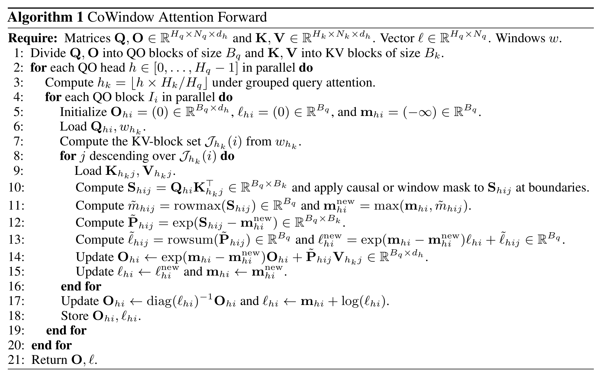
Algorithm 1: CoWindow Attention Forward. Divide Q, O into QO blocks of size $B_q$ and K, V into KV blocks of size $B_k$; for each QO head, compute $h_k$ under GQA, derive the KV-block set $\mathcal{J}_{h_k}(i)$ from $w_{h_k}$, then visit only those blocks, maintaining online-softmax states $m$, $\ell$, $O$; finally normalize and store $O$ together with the log-sum-exp state $\ell$.
关键在 7–9 行:可见块集合由 $w_{h_k}$ 直接算出 ,不查任何索引表;集合外的块在算 QK 之前就被跳过。10–15 行是标准 online softmax 递推:先按块求行最大值再重标定 $O$ 与 $\ell$,因此不需要物化完整注意力矩阵。只有跨越因果边界、窗口边界或序列边界的块才需要逐元素 mask——这是「规则窗」换来的收益。17 行写回时保存的不是概率,而是 $\ell_{hi} \leftarrow m_{hi} + \log(\ell_{hi})$ 这一 log-sum-exp 形式,反向要用它精确重建概率。
报告 p.4
4.2 反向:沿逆关系遍历,梯度是精确的
反向算子换了个遍历方向:对每个 KV 块 $J_j$,求出与它存在合法配对的 QO 块集合 $\mathcal{I}_{h_k}(j)$,即前向可见关系的逆关系。使用的可见键集合与前向完全一致——因此这不是「近似梯度」。
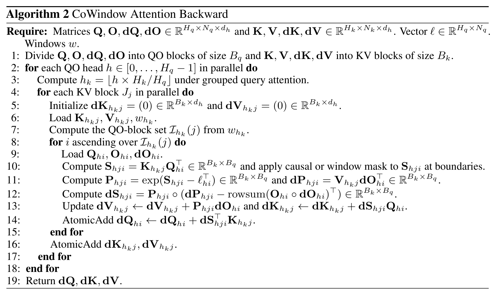
Algorithm 2: CoWindow Attention Backward. For each KV block $J_j$, compute the QO-block set $\mathcal{I}_{h_k}(j)$ from $w_{h_k}$ and traverse this inverse relation with the same visible-key set as the forward pass; probabilities reconstructed from the saved logsumexp $\ell$ yield the exact gradient of the CoWA operator, and atomic additions combine contributions to $dQ$ from multiple KV blocks and to $dK,dV$ from QO heads in the same group.
11–12 行是这套实现能成立的核心:概率由保存的 $\ell$ 重建 ($P = \exp(S - \ell^\top)$),因此不必保存注意力概率矩阵,梯度仍然是精确的。13–14 行分别累积 $dV$、$dK$ 与 $dQ$;同一个 KV head 组内多个 QO head 对 $dK/dV$ 的贡献、多个 KV 块对 $dQ$ 的贡献都用 atomic add 合并。由于 $dQ$ 需要跨 KV 块原子累加,实现上要把「按 KV 块并行」与「按 QO 块并行」的两种划分对齐好——这也是这类稀疏算子比稠密 FlashAttention 更难写的地方。
报告 p.5
4.3 解码:滑动重算切分点
自回归解码就是 $N_q = 1$ 的前向特例:此时 $\delta(0, i_k) = N_k - 1 - i_k$,$N_k$ 等于已缓存 token 数加 1(当前 token),近邻窗自然落在 KV cache 的最新若干项上。关键细节是切分点每步都要按当前 key 长度重算 ——式(2)里的 $b_{h_k}$ 依赖 $N_k$,于是等宽长程窗随序列增长而平滑滑动,而不像固定块划分那样需要重新索引。可见 KV 块可以分给多个 split-KV program,再按标准的部分 online-softmax 状态合并;split 的调度方式决定了并行度与负载均衡,但不改变窗口规则本身。
4.4 张量并行:全局编号是必要设计
分布式这一节是论文少见的「必须这么做」型论证。设张量并行度为 $TP$(要求 $TP \le H_k$,且 $H_k$ 个 KV head 在各 rank 上均匀、连续地切分),对 rank $r$ 上的本地 head $h_{\text{local}}$:
$$h_{\text{global}} = r\,H_k^{\text{local}} + h_{\text{local}}, \qquad H_k^{\text{local}} = H_k / TP \tag{6}$$
式 (2) 的切分点始终用全局索引 $h_{\text{global}}$ 与全局 $H_k$ 求值 ,训练和推理都是如此。这样每个 rank 分到的是互补的长程区间,而不是「每个 rank 都从第 0 段开始」。反向同理:每个 rank 只对自己的本地 KV head 做逆关系遍历,靠全局索引让稀疏模式跨 rank 对齐。
论文在这部分同时交代了三条边界,它们后面对应到实测口径上:
常驻 KV cache 与算子峰值显存是两件事。 模型级评测中,每 rank 仍把本地 KV head 的完整历史留在 HBM 中;减少 HBM 常驻 KV 存储的「窗口感知 offload/prefetch」被明确列为未来工作。第 6 节测的峰值是算子路径上的,不代表服务时的缓存占用。$TP > H_k$ 会复制逻辑 KV head ,此时每 rank 存的反而多于 全局 KV cache 的 $1/TP$。KV-head 切分把缓存按 rank 分区;而「只访问可见 KV 块」降低的是解码算子的工作内存——两者别混。
这一节真正值得学的是「把分布式约束前置到公式里」。 窗口切分点用全局索引定义,看似只是加了一个下标,却让「互补性」成为一个跨 rank 稳定的不变量;否则同一个逻辑 head 在不同 TP 配置下会拿到不同的窗口,训练与部署的注意力模式不再一致——这类不一致在动态稀疏方法里通常表现为「训练能跑、部署掉点」。
05 · Experiments I
实验一:先把「覆盖率」单独拎出来消融
5.1 消融设计:同窗宽,只改「有几个不同的长程窗」
要证明 CoWA 的收益来自「互补分配」而不是「窗口更大」,最干净的做法是固定每个 head 的窗宽 ,只改变跨 8 个 KV head 上放几个不同 的长程窗:
1 个不同窗 × 8 个 head 复制 → 长程覆盖 12.5%
2 个窗 × 4 head → 25%
4 个窗 × 2 head → 50%
8 个窗 × 1 head(CoWA)→ 100%
一个容易被忽略但很关键的实现细节:重复时复制的是最靠近近邻窗的那 $m$ 段 ($W_1,\dots,W_m$)。也就是说,对照组拿到的是「离当前 query 最近的长程段」,信息最新鲜、最有利;而 CoWA 反而要认领包括最远段在内的全部区间。这个偏向对 CoWA 不利,但它仍然胜出 ——这一点让结论更强,值得在引用时一并说明。
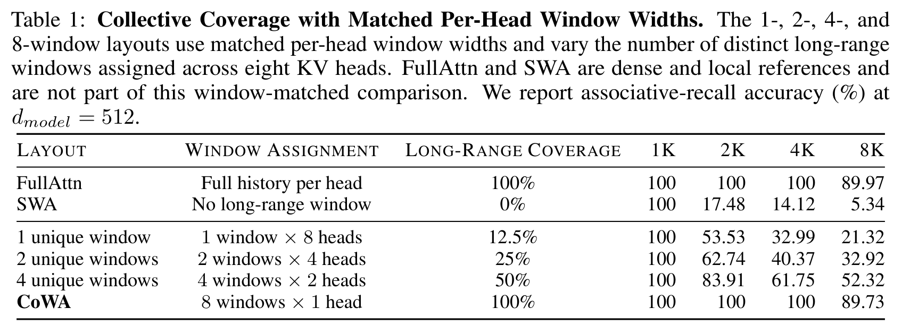
Table 1: Collective Coverage with Matched Per-Head Window Widths. The 1-, 2-, 4-, and 8-window layouts use matched per-head window widths and vary the number of distinct long-range windows assigned across eight KV heads. FullAttn and SWA are dense and local references and are not part of this window-matched comparison. We report associative-recall accuracy (%) at $d_{model} = 512$. (From the paper's Table 1.)
纵向读最右一列(8K):SWA 只靠近邻窗拿到 5.34%,单窗重复 21.32%,2 窗 32.92%,4 窗 52.32%,8 窗互补 89.73%,FullAttn 89.97%。覆盖率从 12.5% 提到 100%,准确率涨了 4 倍多 ;而所有配置在 1K 都是 100(预算 1024 已覆盖整条序列)、2K 开始分叉、8K 拉开最大差距——消融的有效信息几乎全部集中在 8K 这一列。注意 FullAttn 在 1K/2K/4K 是 100,在 8K 掉到 89.97,说明这条任务曲线本身在 8K 才进入困难区。
报告 p.6
论文的结论写得很直接:8K 召回率随重复窗被互补窗替换而单调 上升(21.32 → 32.92 → 52.32 → 89.73),满覆盖时几乎追平 FullAttn(89.97),而只有近邻窗的 SWA 参考掉到 5.34%。这组数字支持「把互补的长程访问分给不同 KV head」本身是有价值的。
5.2 受控关联召回:换一批更强的对手
第二组实验换成标准 关联召回 任务(Arora et al., 2024 的 Zoology 设置):256 组 key-value 绑定,随机关联、无任何语义捷径,训练 250K 条样本、测试 1K 条、跑 100 个 epoch;序列长度 1,024 → 8,192,$d_{model}$ 从 64 到 512。对手包括 FullAttn、SWA、Seer、InfLLMv2、NSA、MoBA、DSA——覆盖稠密、局部、结构化与动态稀疏四类。
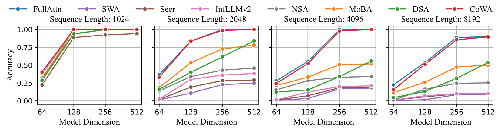
Figure 2: Associative Recall. Accuracy with 256 key-value pairs across sequence lengths and model dimensions. At sequence lengths 1K, 2K, 4K, and 8K, all sparse methods use matched per-query token budgets of 1,024, 1,152, 1,408, and 1,920 tokens, respectively. We do not add random padding or additional noise tokens. CoWA closely tracks FullAttn as the context grows, whereas the other sparse patterns lose a substantial fraction of the associations.
四个面板从左到右是 1K/2K/4K/8K;每个面板横轴是模型维度 64→512,纵轴是召回准确率。读法有三层:① 1K 面板上,只要 $d_{model} \ge 128$,几乎所有方法都接近满分 ——因为预算 1024 已经覆盖整条序列,这印证了「预算即覆盖」的设计;② 分叉从 2K 开始,随序列长度加剧 :4K 面板上只有 FullAttn 与 CoWA 还能在 $d_{model}=256$ 之后爬到 1.0;③ 8K 面板上,CoWA 的红色曲线几乎压在 FullAttn 的蓝色曲线上,而 DSA/MoBA 停在 0.5 附近、NSA 与其余方法在 0.1 上下 。论文也点出一个反直觉现象:部分基线在更大模型维度上确实更好,但增大维度并不能弥合检索缺口——差距是结构性的,不是容量不够。
报告 p.7
值得注意的是这里的预算匹配口径:四档序列长度统一给出 1,024 / 1,152 / 1,408 / 1,920 的 per-query 预算(整理自附录 A.1)。前面 3.5 节的核对显示,这四档恰好等于 $1024 + (N_k-1024)/8$——即所有对手都在「CoWA 满覆盖所需的同一个预算」下比赛 ,CoWA 并没有靠更大预算取胜。CoWA 自身用 $w_{\text{sink}}=1$、$w_{\text{near}}=1023$,共享窗合计 1024 个 token。
另外要明确一个设置边界:论文明确没有 加入随机 padding 或额外噪声 token。检索任务因此是「纯检索」,不包含从干扰项中筛出目标这一层——这一点在点评章还会回到。
怎么读这两组结果: Table 1 回答「覆盖率值多少」,Figure 2 回答「和更强的对手比怎样」。前者是全文最有说服力的一张表,因为它把变量控制到只剩覆盖率;后者在 8K、$d_{model}=512$ 上给出 CoWA 89.73% vs FullAttn 89.97%,而 DSA、MoBA、NSA 分别为 53.71%、50.12%、25.23%,其余方法停留在 10% 附近(整理自正文)。
06 · Experiments II
实验二:算子级延迟与显存——把「选择开销」摆上台面
6.1 渐近账本:CoWA 的辅助状态与序列长度无关
在给实测曲线之前,论文先用一张渐近成本表把四类机制的差别写清楚(记 $n$ 为序列长度、$h$ 为 QO head 数、$w$ 为 per-query 预算、$B$ 为 MoBA 块大小、$h_I$ 与 $d_I$ 为 DSA 索引器的头数与维度):
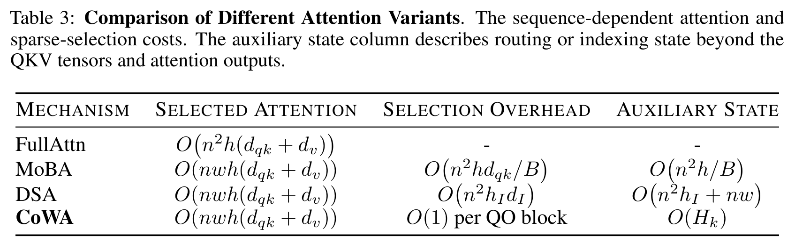
Table 3: Comparison of Different Attention Variants. The sequence-dependent attention and sparse-selection costs. The auxiliary state column describes routing or indexing state beyond the QKV tensors and attention outputs. (From the paper's Table 3.)
四种机制「选中注意力」的复杂度同形($O(nwh(d_{qk}+d_v))$,FullAttn 为 $O(n^2h(d_{qk}+d_v))$),差别全在选择开销 与辅助状态 两列:MoBA 要先把块 key 均值池化、再用每个 query 对 $n/B$ 个块代表打分,于是选择本身是 $O(n^2 h d_{qk}/B)$,辅助状态 $O(n^2h/B)$;DSA 的 lightning indexer 要对所有 query-key 对打分并生成 TopK,选择 $O(n^2 h_I d_I)$,辅助状态 $O(n^2h_I + nw)$;CoWA 的选择开销是 $O(1)$ per QO block,辅助状态只有 $O(H_k)$ ——两者都与 $n$ 无关。这就是「位置定义」四个字的钱花在哪。表下的正文也很坦白:同预算的方法端到端成本可能差很多,一旦把路由与索引算进来。
报告 p.16
6.2 基准配置与预算:注意各家 head 数并不相同
实测在 8 张 H100 上做,张量并行 $TP=8$,batch size 1,除 OOM 外延迟取 25 次预热后的 100 次平均,显存取 8 个 rank 的最大单 rank 峰值 。四家的算子形状如下(整理自 Table 4):
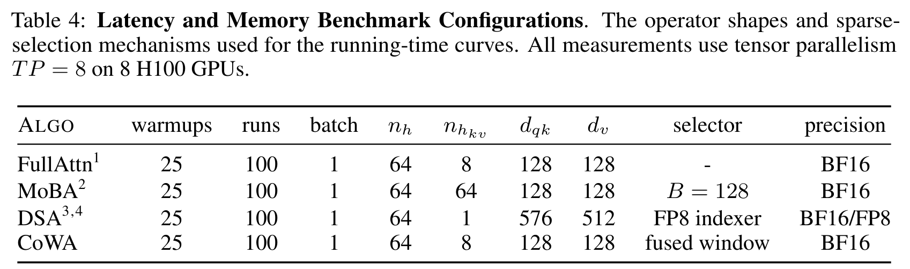
Table 4: Latency and Memory Benchmark Configurations. The operator shapes and sparse-selection mechanisms used for the running-time curves. All measurements use tensor parallelism $TP = 8$ on 8 H100 GPUs. (From the paper's Table 4.)
四家 $n_h=64$、batch=1,但 $n_{hkv}$ 完全不同:FullAttn 与 CoWA 用 8 个 KV head,MoBA 用 64 个(即一个 QO head 配一个 KV head) ,DSA 用 1 个 latent head 且 $d_{qk}=576$、$d_v=512$。这一点直接影响显存曲线的可比性:MoBA 的高显存里有相当部分是「64 个 KV head 的 KV 张量」带来的,而不是选择机制本身。论文对这件事的处理是明确披露 ——「保留各方法原生的 head 配置」——而不是把对手改成对自己有利的形状。此外 CoWA 一行的 selector 写的是 fused window(融合的窗口范围计算),MoBA 是 $B=128$ 的块路由,DSA 是 FP8 索引器。
报告 p.16
预算方面(整理自 Table 5,128K 一列):FullAttn 全量 131,072;MoBA 17,408(对齐到 128 的块);DSA 4,320;CoWA 17,280。DSA 的预算只有 CoWA 的约四分之一,原因是它的每选中 token FLOPs(PST FLOPs)约是 CoWA/MoBA 的 4 倍——论文用「近似匹配前向选中注意力 FLOPs」而不是匹配 token 数来对齐各家。
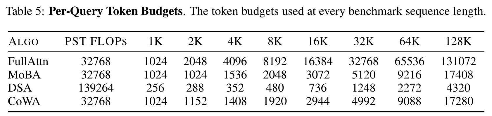
Table 5: Per-Query Token Budgets. The token budgets used at every benchmark sequence length. (From the paper's Table 5.)
四行分别是 FullAttn(全量)、MoBA、DSA、CoWA;第二列 PST FLOPs 说明各家的每 token 单价:FullAttn/MoBA/CoWA 为 32,768,DSA 为 139,264(约 4 倍,故其预算约为四分之一)。CoWA 一行的预算序列 1,024 / 1,152 / 1,408 / 1,920 / 2,944 / 4,992 / 9,088 / 17,280,与本页 3.5 节的 $1024+(N_k-1024)/8$ 逐项吻合(推算)——说明算子基准里 CoWA 始终在 100% 集体覆盖档位运行。MoBA 的预算全部是 128 的整数倍(其块大小),而 DSA 的预算基准与 CoWA 不同,直接比较 token 数会得出错误结论,必须带上 PST FLOPs 一列。
报告 p.17
6.3 曲线:长序列上 CoWA 的反超来自「不算选择」
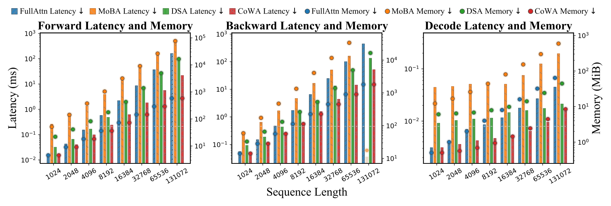
Figure 3: Operator Latency and Memory. End-to-end attention-operator latency (bars, left axes) and maximum per-rank peak allocation (markers, right axes) for the training forward and backward passes and decoding with tensor parallelism $TP = 8$ on 8 H100 GPUs. CoWA has the lowest latency and decoding-operator peak allocation among the tested methods at long sequence lengths.
三个面板从左到右是训练前向、训练反向、推理解码;柱状是延迟(左轴,对数),圆点是单 rank 峰值显存(右轴,对数,单位 MiB)。读图要点:① 短序列(1K–8K)上 CoWA 与 FullAttn 几乎重合甚至更低 ,因为此时预算已接近全量、窗口开销又极小;② 随序列变长,MoBA(橙)与 DSA(绿)的柱子在 16K 之后迅速抬高 ,MoBA 的反向在 128K 直接缺柱(OOM),而其前向显存点已经越过 10⁴ MiB 量级;③ CoWA(红)的三个面板都压在最下面 ,解码面板尤其明显——解码时它只访问可见块,显存点始终停留在 10⁰ 附近,而 FullAttn 的蓝点一路涨到约 64 MiB。
报告 p.7
128K 的具体数字(整理自 Table 6):CoWA 前向 21.758 ms、反向 51.509 ms、解码 0.015 ms;FullAttn 对应 159.987 / 441.230 / 0.045 ms,即 7.4× / 8.6× / 3.0× 的算子级加速 。显存上,CoWA 的前向与反向峰值(580 / 1,804 MiB)与 FullAttn 逐位相同,而解码峰值 8.441 MiB 比 FullAttn 的 64.004 MiB 低 7.6 倍。MoBA 的反向在 128K 超出单 rank 显存上限;DSA 的 128K 前向是 93.671 ms,尽管它的选中预算只有 CoWA 的四分之一——论文归因于索引器成本。
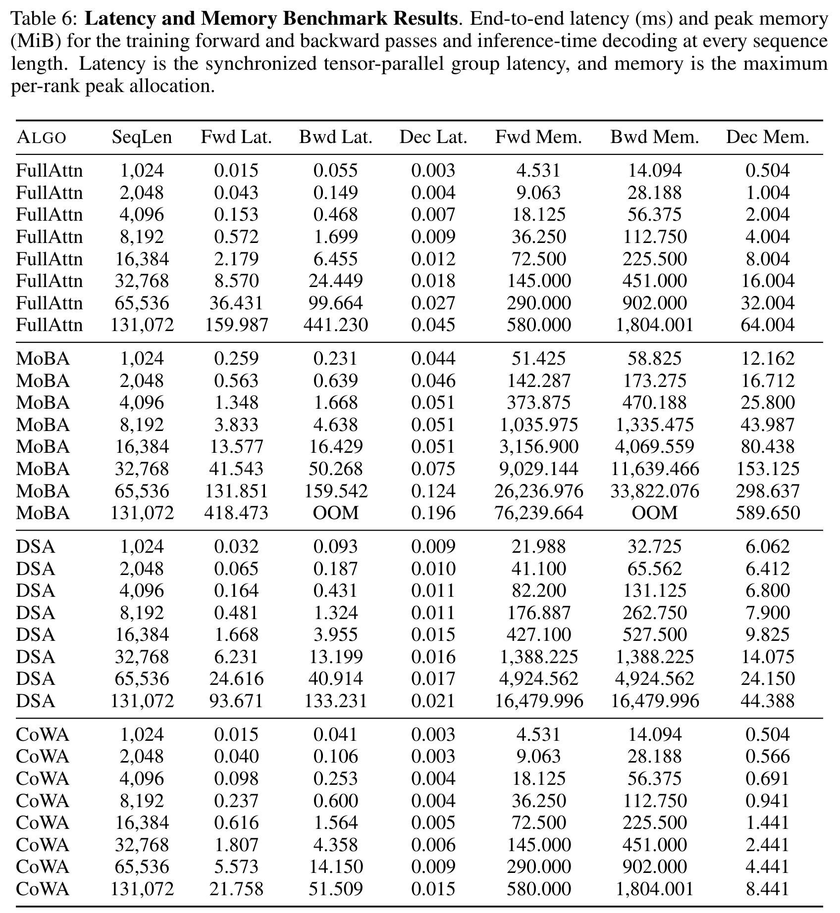
Table 6: Latency and Memory Benchmark Results. End-to-end latency (ms) and peak memory (MiB) for the training forward and backward passes and inference-time decoding at every sequence length. Latency is the synchronized tensor-parallel group latency, and memory is the maximum per-rank peak allocation. (From the paper's Table 6.)
全量数据。几个可以自己验算的对照:128K 上 FullAttn→CoWA 的前向延迟比 $159.987/21.758 \approx 7.35$(论文记 7.4×)、反向 $441.230/51.509 \approx 8.57$(记 8.6×)、解码 $0.045/0.015 = 3.0$;解码显存 $64.004/8.441 \approx 7.58$(记 7.6×)。另外两个值得注意的细节:① FullAttn 与 CoWA 的训练前向/反向显存逐位相同 (580 / 1,804 MiB),说明 CoWA 的显存优势只出现在解码路径上——这符合其「只访问可见 KV 块」的实现方式;② MoBA 在 32K 之后的内存列已经到 9,029 / 11,639 MiB 量级,128K 反向 OOM ,其 128K 编码解码显存为 589.650 MiB,约为 CoWA 的 70 倍(本页推算)。
报告 p.17
口径提醒(重要): 这些数字是算子级端到端 计时,不是模型端到端训练步时。论文明确列出各自的完整路径:MoBA 含块代表构造、router logits、TopK、索引构造、数据重排与输出合并;DSA 含 BF16 索引输入、FP8 量化、indexer logits、TopK/indices 与 sparse MLA;CoWA 含融合的窗口范围与 mask 逻辑。而模型级 QKV/O 投影、MLP、通信与优化器更新都不在范围内 。因此 7.4×/8.6×/3.0× 应读作「注意力算子」的加速比,而不是整机加速比;模型整体的收益要看第 7 节的训练 FLOPs。
07 · Experiments III
实验三:0.6B→14B 的 scaling law,与 14B/32B 的模型评测
7.1 配置:五个规模、两段训练
训练在 128 张 H100 上、用 Megatron-LM 做分布式训练;数据用 SmolLM-Corpus,分词器用 Qwen3 的,优化器 AdamW,学习率走 WSD 调度,固定随机种子 42。每个规模分两段:预训练(PT,4,096 序列长度)与长上下文训练(LCT,32,768),LCT 从 PT 的最终 checkpoint 初始化、用恒定学习率。五档规模 0.6B / 1.7B / 4B / 8B / 14B,层数 28→40、$d_{model}$ 1024→5120、QO head 16→40,而 KV head 全程固定为 8 ——这一点值得留意,后文点评会回到它。
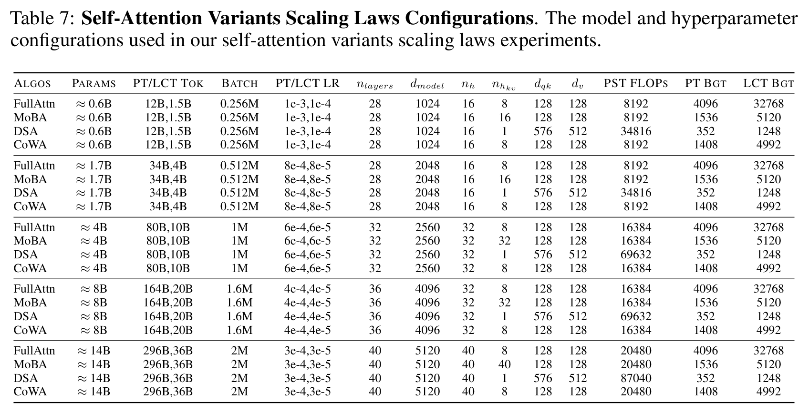
Table 7: Self-Attention Variants Scaling Laws Configurations. The model and hyperparameter configurations used in our self-attention variants scaling laws experiments. (From the paper's Table 7.)
每档规模四行(FullAttn / MoBA / DSA / CoWA),前三列之外的差异集中在头配置与预算:FullAttn 与 CoWA 用 8 个 KV head、MoBA 用「一个 QO head 一个 KV head」(16/16、32/32、40/40)、DSA 用 1 个 latent head 且 $d_{qk}=576$/$d_v=512$。预算列(PT Bgt / LCT Bgt):CoWA 1,408 / 4,992,MoBA 1,536 / 5,120,DSA 352 / 1,248(其 PST FLOPs 约 4 倍,故预算约四分之一)。匹配口径是「近似匹配前向选中注意力 FLOPs 」,而不是匹配 head 数或原始 token 数——论文对此说得很清楚,也承认这不要求端到端训练 FLOPs 相同 。token 量从 0.6B 的 12B/1.5B 一路到 14B 的 296B/36B。
报告 p.19
7.2 FLOPs 账本:为什么预训练只省 3.1%、长上下文省 28.5%
横轴是 Megatron-LM 报告的累计训练 FLOPs (覆盖完整模型计算)。为了把注意力那部分的贡献单独暴露出来,论文额外实测 了每个配置下真正执行的合法注意力连接数,而不是把「末位 query 的预算」套给所有 query。设 $\bar{s}$ 为平均每个 query、每个 QO head 选中的 key 数,则每 token 每层的序列相关核心注意力成本为
$$C_{\text{core}} = 8\,\bar{s}\,h\,d_{qk} + 6\,\bar{s}\,h\,d_{v}$$
其中反向要重算 QK,故 QK 侧系数为 8、PV 侧为 6(一次乘加按 2 FLOPs 计)。FullAttn 的 $\bar{s} = (n+1)/2$(因果三角);CoWA 的实测值是 $\bar{s} = 1{,}040.17$(4K 预训练)与 $\bar{s} = 2{,}930.08$(32K 长上下文训练)。MoBA 与 DSA 用各自因果裁剪后的选中支撑集,并把路由与索引开销计入总量。
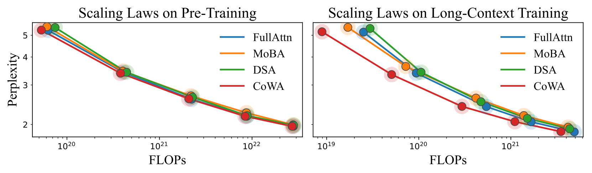
Figure 4: Scaling Laws. Perplexity as a function of training FLOPs for models from 0.6B to 14B parameters during 4K pre-training (left) and 32K long-context training (right). Each marker reports final perplexity; its outer ring denotes one standard deviation over the perplexity measurements collected during training. CoWA closely follows FullAttn in perplexity while requiring fewer FLOPs.
横轴是累计训练 FLOPs(对数),纵轴是困惑度,每个标记是一个模型规模,外圈是训练期间困惑度测量的一倍标准差。左(4K 预训练) :四条曲线几乎重合,CoWA 略微偏左(更省 FLOPs);右(32K 长上下文) :曲线明显分层,红色 CoWA 在同样困惑度下处于最左——最右端的 14B 点上,CoWA 与 FullAttn 的困惑度差异不到 0.01,而它的横坐标明显更小。读这张图要注意两点:① 圆环之间大量重叠,说明这些曲线在统计上难以区分,结论应是「相当」而非「更优」;② 纵向差距主要体现在长上下文阶段,这与注意力成本随序列长度增长的形状一致。
报告 p.8
由此得到论文的核心效率声明:在 14B 上,CoWA 的预训练困惑度与 FullAttn 持平,长上下文训练后差异小于 0.01,而总训练 FLOPs 分别降低 3.1%(4K 阶段)与 28.5%(32K 阶段) 。差异的来源很清楚:稠密注意力的成本随序列长度增长,而 CoWA 在 32K 阶段用 per-QO-head 4,992 的预算实现满覆盖,且不引入任何路由器或索引器 FLOPs。预训练阶段序列只有 4K,共享窗(1024)占了四分之一,长程只剩 3,072 个 token 可省,因此降幅自然有限。
7.3 模型评测:14B 四个变体,32B 继续训练
评测分两组:14B 用 scaling law 得到的全部四个注意力变体;32B 只比 FullAttn 与 CoWA,且两支都是另一套长上下文继续训练 得到的(64B token、序列 32,768、batch 4M、恒定学习率 $1\times10^{-5}$、64 层、$d_{model}$ 5,120、64 个 QO head、8 个 KV head)。每个任务跑 5 个种子(0、42、233、666、1234)报均值与标准差,评测用 EleutherAI LM Evaluation Harness,在 8 张 H100 上完成。
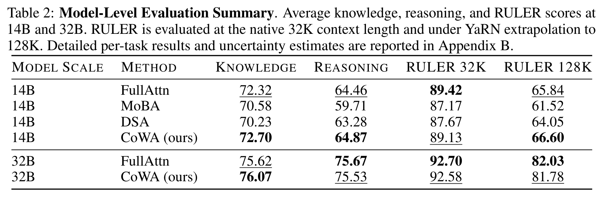
Table 2: Model-Level Evaluation Summary. Average knowledge, reasoning, and RULER scores at 14B and 32B. RULER is evaluated at the native 32K context length and under YaRN extrapolation to 128K. Detailed per-task results and uncertainty estimates are reported in Appendix B. (From the paper's Table 2.)
正文结论表。14B:CoWA 知识 72.70 / 推理 64.87 / RULER-32K 89.13 / RULER-128K 66.60,FullAttn 为 72.32 / 64.46 / 89.42 / 65.84;MoBA 70.58 / 59.71 / 87.17 / 61.52,DSA 70.23 / 63.28 / 87.67 / 64.05。32B:CoWA 76.07 / 75.53 / 92.58 / 81.78 对 FullAttn 75.62 / 75.67 / 92.70 / 82.03。读法上要注意粗体/下划线表示同列同规模的最优与次优 ,但相邻数字之间的差距普遍小于 0.5 分,而明细表里的运行间标准差常在 0.3–1.5 之间、GPQA-Diamond 甚至达到 ±3.5——所以「CoWA 在 14B 知识与推理上更高」不应被当成稳定优势,论文自己的用词也是 comparable。
报告 p.8
明细三张表(Table 8/9/10)给出的信息比汇总更多,尤其是「哪一项掉了、哪一项涨了」:
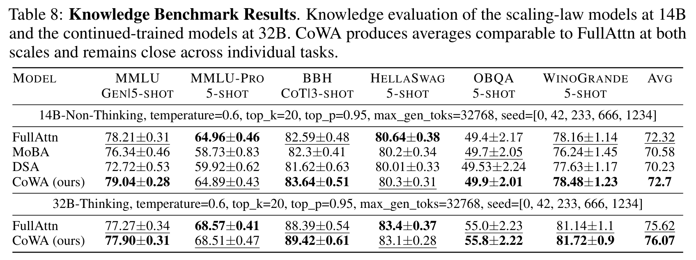
Table 8: Knowledge Benchmark Results. Knowledge evaluation of the scaling-law models at 14B and the continued-trained models at 32B. CoWA produces averages comparable to FullAttn at both scales and remains close across individual tasks. (From the paper's Table 8.)
逐项看,规律在两个规模上一致:CoWA 在 MMLU 与 BBH 上更高 (14B 79.04±0.28 对 78.21±0.31;83.64±0.51 对 82.59±0.48),在 MMLU-Pro 与 HellaSwag 上略低 (64.89 对 64.96;80.3 对 80.64)。这不是随机波动而是系统性偏置:知识型多选题与推理混合型任务(MMLU/BBH)受益,而蒸馏式选择题(MMLU-Pro)与常识续写(HellaSwag)略损。MoBA 与 DSA 在同一张表上明显落后,尤其在 MMLU-Pro(58.73 / 59.92 对 64.96)。
报告 p.19
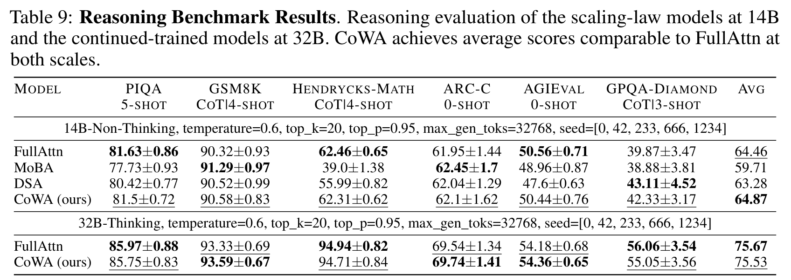
Table 9: Reasoning Benchmark Results. Reasoning evaluation of the scaling-law models at 14B and the continued-trained models at 32B. CoWA achieves average scores comparable to FullAttn at both scales. (From the paper's Table 9.)
这张表里最值得注意的两个数字:Hendrycks-Math 上 CoWA 62.31±0.62 紧贴 FullAttn 的 62.46±0.65,而 MoBA 只有 39.0±1.38、DSA 55.99±0.82 ——数学推理对稀疏注意力的伤害远比平均分显示的严重,而 CoWA 基本无损;GPQA-Diamond 的标准差高达 ±3.17 ~ ±3.56 ,而 CoWA 在这里得分 42.33 对 FullAttn 39.87,近 2.5 分的领先却带着 3 分以上的波动——论文也点明 14B 推理均值的「小幅领先」主要来自这一项。除 GPQA-Diamond 外,两个规模上所有逐项差异都在 0.26 分以内。
报告 p.20
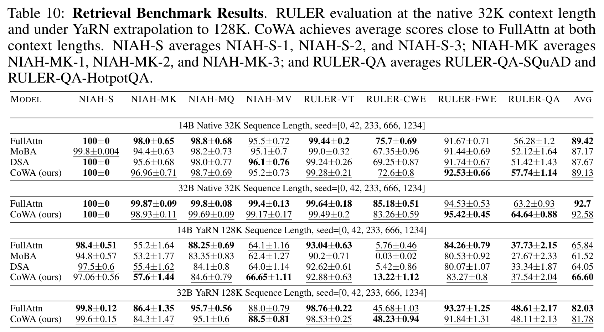
Table 10: Retrieval Benchmark Results. RULER evaluation at the native 32K context length and under YaRN extrapolation to 128K. CoWA achieves average scores close to FullAttn at both context lengths. NIAH-S averages NIAH-S-1, NIAH-S-2, and NIAH-S-3; NIAH-MK averages NIAH-MK-1, NIAH-MK-2, and NIAH-MK-3; and RULER-QA averages RULER-QA-SQuAD and RULER-QA-HotpotQA. (From the paper's Table 10.)
四组分区:14B/32B × 原生 32K / YaRN 128K。几个具体读数:14B 原生 32K,CoWA 89.13 对 FullAttn 89.42,差距 0.29;其中 RULER-QA 反而更高(57.74±1.14 对 56.28±1.2),而 NIAH-MK 更低(96.96±0.71 对 98.0±0.65) 。YaRN 外推到 128K 时差距被放大:14B 上 NIAH-MQ 84.6±0.79 对 88.25±0.69,但 CoWA 在 RULER-CWE(常见词抽取)上 13.22±1.12 对 5.76±0.46 ——这是一项所有方法都很低的困难任务,CoWA 是唯一还保有两位数得分的。注意 YaRN 128K 的 NIAH-MK 在 55–57 分区间 ,说明外推本身造成了大幅性能损失,这一列数字不适合与 32K 原生列直接比较。
报告 p.20
第 7 节的三句话总结: ① 在 0.6B→14B 的范围内,CoWA 用更少的训练 FLOPs 换来与 FullAttn 无法区分的困惑度;② 换来的模型在知识、推理、长上下文检索上也是「可比」而非「更好」,逐项有得有失;③ FLOPs 的节省几乎全部来自长上下文阶段 (28.5% vs 3.1%),这与设计动机严格对应——CoWA 省的正是长序列上被重复计算的那部分长程连接。
08 · Commentary
点评:三个亮点、五条边界,与一份待补测清单
8.1 值得学的三处设计
第一,把「覆盖率」做成了可消融的单一变量。 多数稀疏注意力论文的消融是「去掉模块 A 会掉多少分」,变量不干净。CoWA 的做法是固定 per-head 窗宽、只改「跨 8 个 KV head 放了几个不同的长程窗」,于是 12.5%/25%/50%/100% 四个覆盖率档位可以直接读出准确率(Table 1)。更难得的是重复窗选择的是离当前 query 最近 的那几段——对照组信息最新鲜,这个偏向对 CoWA 不利,它仍然胜出。
第二,把「选择开销」从口号变成账本。 论文反复强调一件事:两个方法选中 token 数相同,端到端成本仍可能差很多。Table 3 用渐近式把 MoBA 的 $O(n^2hd_{qk}/B)$ 与 DSA 的 $O(n^2h_Id_I)$ 摆出来,配上「辅助状态」一列,再在 Figure 3 上用实测兑现。这条论证链让「CoWA 在长序列上反超」有了机制解释,而不只是曲线更好看。
第三,把分布式约束前置进公式。 窗口切分点用全局 KV-head 索引求值(式 6),而不是本地索引。代价只是一个下标,收益是互补性成为跨 rank 稳定的不变量;在 $TP = H_k = 8$ 时还额外得到「一个 rank 一段长程窗」的整齐分工(本页推算,见 3.5 节)。若改用本地编号,每个 rank 都会认领第 0 段长程窗,设计在 TP 下直接失效——这是一个容易被实现者踩掉的坑。
8.2 技术来源一览
CoWA 各组件与论文标注的上游工作(据论文行内引用整理,非论文原表)
组件 / 设计点 论文标注的上游 本文的改造或集成
分块 + online softmax 的执行结构 FlashAttention(Dao et al., 2022) 沿用分块遍历与在线 softmax 递推,但只遍历由位置规则算出的合法 KV 块;反向复用保存的 logsumexp 精确重建概率 近邻滑窗 Longformer(Beltagy et al., 2020);SWA 不再是每个 head 唯一的可见范围,而是所有 KV head 共享的一段;真正的稀疏化发生在远距离 前缀 sink token 注意力汇/首 token 现象(Barbero et al., 2025) 作为共享 sink 窗并入窗口定义,与近邻窗一起被 $H_k$ 个 head 重复 按因果距离把区间分给 head SPAttention(ref [66]) 从 MHA head 迁移到 GQA 的 KV head;补上长上下文、解码与张量并行执行,并给出覆盖率消融(论文脚注指出其开源实现 MEHC 为 shared-local,不具备这些) QO head 组共享 KV GQA(Ainslie et al., 2023) 窗口分配绑定到 KV head;组大小为 $H_q/H_k$,决定了长程 key 的重复次数 关联召回评测设置 Zoology(Arora et al., 2024) 沿用 256 组 key-value 与幂律 query 采样($a=0.01$);明确不加入随机 padding 与噪声 token 长上下文外推与评测 YaRN(ref [41])、RULER(ref [26])、LM Evaluation Harness(ref [17]) 原生 32K 与 YaRN 128K 两档评测,固定 5 个种子与统一解码设置 张量并行训练 Megatron-LM(ref [47]) 窗口按全局 KV-head 索引定义,使互补性跨 rank 稳定;128 卡训练
引用为论文行内标注口径,本页未逐条核对参考文献条目。
8.3 需要保留的疑问
① $H_k$ 是硬约束,而且它与当下的架构潮流方向相反。 互补区间的数量就等于 KV head 数。论文全程固定 $H_k = 8$,而当下不少高效架构在往「更少 KV head / latent KV」走(论文自己的 DSA 基线就只用 1 个 latent head)。$H_k=1$ 时集体覆盖退化为稠密因果注意力——这是论文自己写下的结论。那么 $H_k = 2$ 或 $4$ 时收益还剩多少?把远距离切成 4 段而不是 8 段,单个 head 的长程窗宽要翻倍才能维持满覆盖,共享窗的重复占比也随之上升。论文没有给出 $H_k$ 的敏感性曲线,而这恰恰是决定该设计能否被广泛采用的关键参数。
② 覆盖 ≠ 等效,而差距随序列长度如何变化没有被测。 论文自己给了限定:完整因果覆盖保证直接访问,但不意味着与 FullAttn 相同的 head 级交互或输出。机制上很清楚——每个 QO head 在自己的可见集合上做 softmax,归一化分母变了 ,所以 CoWA 是另一种注意力分布。8K 上的差距是 0.24 个百分点(89.73 vs 89.97)。但质量的评测只做到 32K 原生(+YaRN 128K),而效率优势恰恰在 128K 最大;关联召回只到 8K。也就是说,「覆盖率造成的分布差异在更长序列上是否放大」这件事,论文的评测范围没有覆盖到它效率最强的工况 。
③ 长程冗余度恒为 1。 由式 (5),每个长程 key 只落在一个 KV head 的支撑集里,因此一个远距离 token 被多少个 QO head 直接看到,恰好等于组大小 $H_q/H_k$(0.6B 时 2,14B 时 5,32B 时 8);而近邻 token 被全部 $H_q$ 个 QO head 看到。这是「省重复」的机制本身,但也意味着远距离信息是单点读取 :没有多 head 冗余投票,也就没有「多个 head 从不同角度确认同一远距离证据」的能力。论文的检索任务明确不加随机 padding 与噪声,所以「有干扰项时单点读取是否足够鲁棒」没有被测。这是我认为最值得补的一组实验。
④ 训练时的负载不均没有解决。 等宽分配被明确说明是为解码 负载均衡服务的;等面积(或等负载)分配「超出本文范围」。论文也承认即使长程窗宽相等,各 head 的实际工作量仍可能不同(前文算过:早位 query 的支撑集会被因果裁剪)。在全序列训练里,这意味着同一个 TP group 内不同 rank 的注意力工作量可能不等,而 rank 间是同步的——这类不均衡会直接吃掉部分效率收益。论文报告的是算子级同步 wall-clock,没有给出 per-head 负载或 rank 间等待的分布。
⑤ 效率数字的口径需要读清楚。 7.4×/8.6×/3.0× 与显存对比都是注意力算子级 的:不含 QKV/O 投影、MLP、通信与优化器更新(论文明确列出)。同时,四家的 KV head 配置并不同(CoWA 8、MoBA 64、DSA 1 个 latent),所以显存曲线不是同头数对比——论文是明确披露而非回避这一点,但读者仍应把它当成「各方法在各自原生配置下的表现」,而非纯粹的机制对比。解码 8.4 MiB 也是算子峰值 ,不等于服务时常驻 KV cache(论文在 2.3 节专门区分了这两件事,并说窗口感知的 offload/prefetch 是未来工作)。
8.4 未披露、值得补测
scaling law 与长上下文阶段的窗口拆分未见披露。 论文只给了 per-QO-head 总预算(1,408 / 4,992)与关联召回阶段的 $w_{\text{sink}}=1$、$w_{\text{near}}=1023$;长上下文与算子基准里 sink/近邻/长程各占多少没有单列。本页 3.5 节按 $1024+(N_k-1024)/8$ 反推,发现所有预算都恰好落在「共享窗 1024 + 8 段等宽 + 满覆盖」上(本页推算),但论文没有直接确认这一拆分——复现者据此无法核对窗口参数。$\bar{s}$ 的口径与名义预算的差距未展开。 论文报告实测 $\bar{s} = 1{,}040.17$(4K PT)与 $2{,}930.08$(32K LCT),而名义 per-QO-head 预算是 1,408 与 4,992。这个差距理论上来自因果裁剪、窗口重叠与序列打包方式,但论文没有给出分项,读者无法据此核对 3.1% / 28.5% FLOPs 降幅的构成。值得补一张「预算 → 实际支撑集 → FLOPs」的对账表。更长原生序列的质量曲线缺失。 质量评测到 32K 原生 / YaRN 128K,而效率优势在 128K 最大;若能在 64K–128K 做原生长上下文训练并评测 RULER,才能真正验证「覆盖率在极长序列上不退化」。$H_k$ 敏感性未测。 全文固定在 8 个 KV head。$H_k \in \{2,4,8,16\}$ 的覆盖率-质量-效率三元曲线,是判断该设计适用范围最直接的一组实验。32B 只与 FullAttn 对照,且未纳入 scaling law。 32B 的回答来自另一套继续训练实验,只有 FullAttn 与 CoWA 两行;MoBA/DSA 的 32B 结果、以及 NSA 在规模实验中的位置都没有出现——NSA 只在 8K 关联召回里露面。这让「CoWA 相对动态稀疏的优势随规模是否保持」缺少证据。带干扰的检索与训练稳定性诊断。 关联召回明确不加随机 padding/噪声;各 head 可见集合不同对梯度尺度、per-head 负载的影响也只体现在最终困惑度与一个标准差环上,没有中间诊断。
一句话定位: CoWA 更像是「把稀疏注意力的成本结构重新排序 」而不是「把注意力变稀疏」——它用「覆盖率」这个可消融的维度,把长程重复连接换成互补分工,代价是单点读取与对 $H_k$ 的依赖;在它测过的范围内,这笔交换是划算的,而且实现规则足够简单,能同时落在训练、解码与张量并行上。
Glossary
术语速查
阅读中遇到缩写,可随时回到这里;正文里的缩写也可悬停查看释义。
阅读术语表(正文中带虚线下划线的缩写悬停可见)
缩写 全称 一句话解释
CoWA CoWindow Attention 本文方法:共享近邻窗 + 共享前缀 sink 窗 + 每 KV head 一段互补长程窗 FullAttn Full Attention 标准稠密因果注意力:每个 head 都看完整因果前缀 SWA Sliding-Window Attention 只用固定长度滑窗的注意力,无长程访问;本文的局部参考基线 GQA Grouped-Query Attention 多个 QO head 共享一组 KV head;$H_q/H_k$ 即组大小 QO / KV head Query-Output / Key-Value head QO head 产生 query 与输出;KV head 提供 K/V。GQA 下前者多于后者 $\delta(i_q,i_k)$ Bottom-right-aligned causal distance 论文定义的因果距离 $i_q+(N_k-N_q)-i_k$,统一训练、prefill 与解码 $w_{\text{sink}}$ / $w_{\text{near}}$ Prefix-sink width / near-window width 两个共享窗的宽度;关联召回配置为 1 / 1023,合计 1024 $L$ / $b_{h_k}$ Long-range span / breakpoints 扣除共享窗后剩余的长程跨度,以及把 $L$ 均分给 $H_k$ 个 KV head 的切分点 集体覆盖 Collective coverage 各 head 可见集合的并集 = 完整因果前缀(式 4);本文的核心性质 TP Tensor Parallelism 张量并行;本文要求 $TP \le H_k$,窗口按全局 KV-head 编号分配 $\bar{s}$ Mean selected keys per query per QO head FLOPs 记账用的实测平均支撑集大小;CoWA 为 1,040.17(4K)/2,930.08(32K) PST FLOPs Per-Selected-Token FLOPs 每个选中 key token 贡献的前向 QK+PV FLOPs,等于 $2h(d_{qk}+d_v)$;用于跨方法对齐预算 MoBA Mixture-of-Block Attention 块级动态稀疏基线:块池化 + 路由 + TopK + 重排 + 合并 DSA DeepSeek Sparse Attention token 级动态稀疏基线:lightning indexer 打分 + TopK + sparse MLA NSA Native Sparse Attention 原生可训练稀疏注意力基线,本文只在 8K 关联召回中出现 Seer / InfLLMv2 — 关联召回实验中的两个动态稀疏基线,8K 上准确率接近 10% online softmax Online (streaming) softmax 分块计算注意力时的递推归一化;保存 $m,\ell,O$ 三元状态 logsumexp $\ell$ Log-sum-exp state 论文保存 $\ell = m + \log(\ell)$,反向据此精确重建概率,无需存注意力矩阵 split-KV Split-KV decoding 把解码的可见 KV 块分给多个 program 并行,再用部分 online-softmax 状态合并 RULER RULER long-context benchmark 长上下文检索评测套件,含 NIAH 变体、变量追踪与问答聚合 NIAH-S/MK/MQ/MV Needle-in-a-Haystack variants 单针 / 多键 / 多查询 / 多值 四类「大海捞针」子任务 YaRN Yet another RoPE extensioN RoPE 位置外推方法;本文在 128K 评测时使用 HBM High Bandwidth Memory GPU 显存;解码时每 rank 仍把本地 KV head 的完整历史常驻于此 WSD Warmup-Stable-Decay 训练学习率调度;本文 scaling law 使用 SmolLM-Corpus — scaling law 实验所用的预训练语料(Ben Allal et al., 2024)